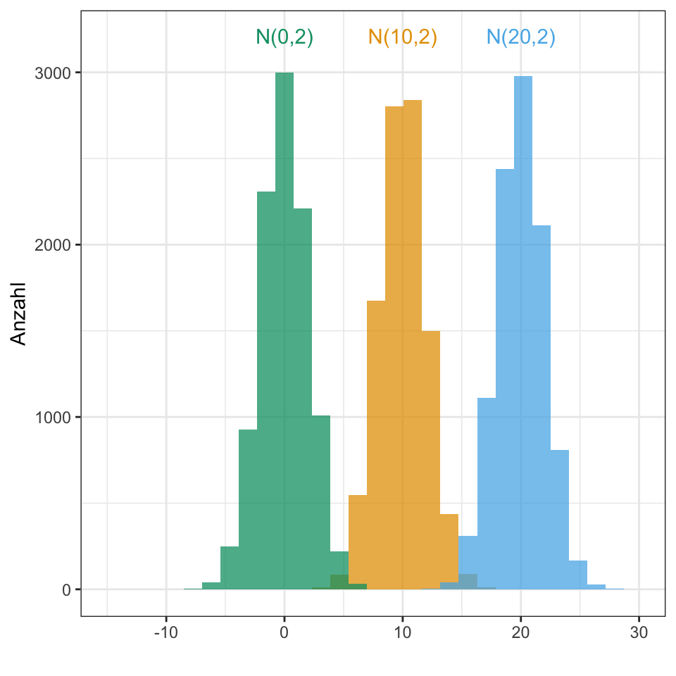
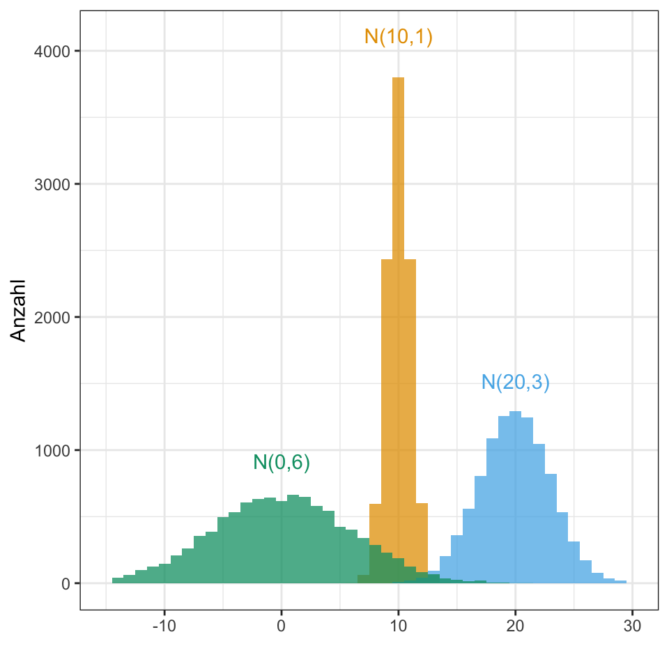

17 Verteilung von Daten

17.1 Genutzte R Pakete für das Kapitel
Wir wollen folgende R Pakete in diesem Kapitel nutzen.
pacman::p_load(tidyverse, magrittr, see, readxl)Am Ende des Kapitels findest du nochmal den gesamten R Code in einem Rutsch zum selber durchführen oder aber kopieren.
17.2 Daten
Wir wollen uns nun erstmal den einfachsten Fall anschauen mit einem simplen Datensatz. Wir nehmen ein normalverteiltes \(y\) aus den Datensatz flea_dog_cat_fox.csv und einen Faktor mit mehr als zwei Leveln. Hätten wir nur zwei Level, dann können wir auch einen t-Test rechnen können.
Im Folgenden selektieren mit der Funktion select() die beiden Spalten jump_length als \(y\) und die Spalte animal als \(x\). Danach müssen wir noch die Variable animal in einen Faktor mit der Funktion as_factor() umwandeln.
gummi_tbl <- read_excel("data/gummibears.xlsx") %>%
select(gender, height, count_bears, count_color) %>%
na.omit() %>%
mutate(gender = as_factor(gender))17.3 Normalverteilung

Dormann (2013)
\(\mathcal{N}(\bar{y}, s^2_y)\)
\(\mathcal{N}(0, 1)\)


17.3.1 Homogenität und Heterogenität der Varianzen
Eine Varianzhomogenität liegt vor, wenn die Varianzen der Gruppen gleich sind.
\[ s^2_{dog} = s^2_{cat} = s^2_{fox} \]
Eine Varianzheterogenität liegt vor, wenn die Varianzen der Gruppen ungleich sind.
\[ s^2_{dog} \neq s^2_{cat} \neq s^2_{fox} \]
17.4 Poissonverteilung
\(\mathcal{Pois}(\lambda)\)
\(\mathcal{Pois}(4)\)


rpois(n = 10, lambda = 5) [1] 3 5 4 5 3 3 9 3 5 517.5 Weitere Verteilungen
In der nächsten Zeit werden noch weitere gängige Verteilungen ergänzt. Bis dahin können die Basic Probability Distributions in R nochmal extern nachgeschaut werden.